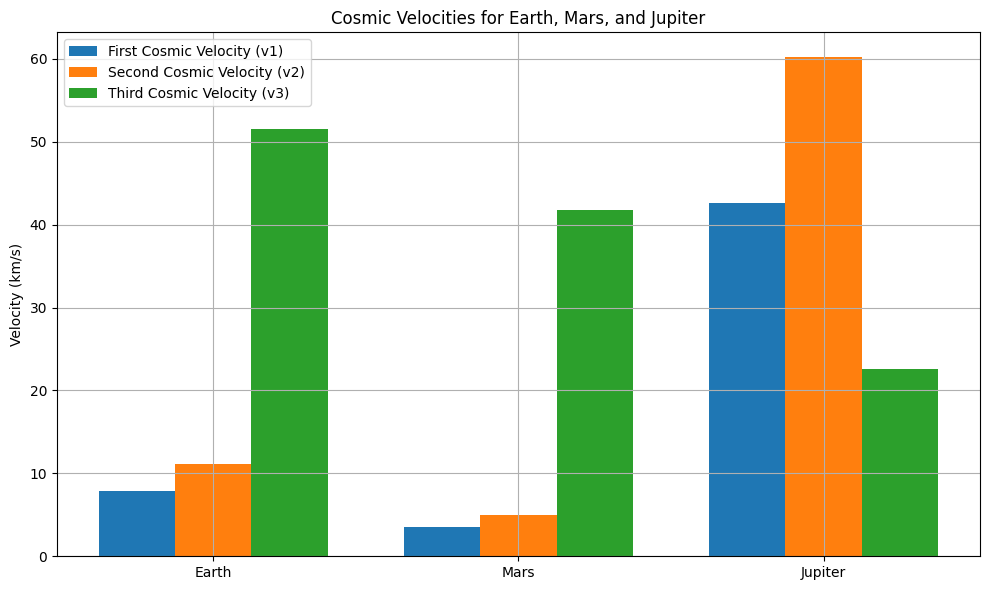

Escape Velocities and Cosmic Velocities
1. Motivation
The concept of escape velocity is fundamental to spaceflight and astrophysics. It determines the minimum speed required for an object to break free from a celestial body's gravitational field without further propulsion. The extension of this idea into cosmic velocities — the first, second, and third — provides the framework for understanding orbital mechanics, planetary escape, and interstellar travel. These velocities form the basis of satellite deployment, interplanetary probes, and the future of space exploration.
2. Definitions and Physical Meanings
2.1 First Cosmic Velocity (Orbital Velocity)
The minimum velocity needed to achieve a stable circular orbit around a planet just above its surface.
Equation:
$$
v_1 = \sqrt{\frac{GM}{R}}
$$
Where: - \(G\) is the gravitational constant: \(6.67430 \times 10^{-11} \ \text{m}^3 \text{kg}^{-1} \text{s}^{-2}\) - \(M\) is the mass of the planet - \(R\) is the radius of the planet
Derivation: Set the centripetal force equal to the gravitational force:
$$
\frac{mv^2}{R} = \frac{GMm}{R^2} \Rightarrow v = \sqrt{\frac{GM}{R}}
$$
2.2 Second Cosmic Velocity (Escape Velocity)
The minimum velocity needed to escape the gravitational pull of a planet without further propulsion.
Equation:
$$
v_2 = \sqrt{\frac{2GM}{R}}
$$
Derivation: From conservation of energy:
$$
\frac{1}{2}mv^2 = \frac{GMm}{R} \Rightarrow v = \sqrt{\frac{2GM}{R}}
$$
2.3 Third Cosmic Velocity (Interstellar Escape Velocity)
The minimum velocity needed to escape the gravity of the Sun starting from Earth’s orbit.
Equation:
$$
v_3 = \sqrt{v_\text{escape from Earth orbit}^2 + v_\text{Earth orbit}^2}
$$
Or more formally:
$$
v_3 = \sqrt{\frac{2GM_\odot}{r} - v_\text{Earth}^2}
$$
Where: - \(M_\odot\) is the Sun's mass - \(r\) is the Earth-Sun distance - \(v_\text{Earth}\) is Earth's orbital speed around the Sun (~29.78 km/s)
3. Mathematical Analysis and Parameters
**3.1 Dependence on Mass (\(M\))
All cosmic velocities are directly proportional to the square root of the celestial body's mass:
-
\[ v \propto \sqrt{M} \]
This means that more massive planets or stars require higher speeds to orbit or escape their gravitational fields.
**3.2 Dependence on Radius (\(R\))
All cosmic velocities are inversely proportional to the square root of the radius:
-
\[ v \propto \frac{1}{\sqrt{R}} \]
Larger planets (in terms of radius) require lower speeds for orbit or escape, assuming mass is constant.
**3.3 First Cosmic Velocity Recap
The orbital velocity (\(v_1\)) ensures that the centripetal acceleration matches gravitational acceleration:
-
\[ v_1 = \sqrt{\frac{GM}{R}} \]
3.4 Second Cosmic Velocity Recap
The escape velocity (\(v_2\)) is derived by equating kinetic energy to gravitational potential energy:
-
\[ \frac{1}{2}mv^2 = \frac{GMm}{R} \Rightarrow v_2 = \sqrt{\frac{2GM}{R}} \]
**3.5 Third Cosmic Velocity Recap
To escape the entire solar system, the third cosmic velocity takes into account both the Sun’s gravity and Earth's motion around the Sun:
3.6 Summary of Parameters
| Parameter | Effect on \(v_1\), \(v_2\), \(v_3\) |
|---|---|
| \(M\) | Increases velocities |
| \(R\) | Decreases velocities |
| \(G\) | Constant (universal) |
| Orbit Radius \(r\) (for \(v_3\)) | Larger \(r\) lowers solar escape speed |
import numpy as np
import matplotlib.pyplot as plt
# Constants
G = 6.67430e-11 # gravitational constant in m^3 kg^-1 s^-2
# Define celestial bodies with mass (kg) and radius (m)
bodies = {
'Earth': {'mass': 5.972e24, 'radius': 6.371e6},
'Mars': {'mass': 6.417e23, 'radius': 3.3895e6},
'Jupiter': {'mass': 1.898e27, 'radius': 6.9911e7},
}
# Store results
results = {}
for body, props in bodies.items():
M = props['mass']
R = props['radius']
v1 = np.sqrt(G * M / R) # First cosmic velocity
v2 = np.sqrt(2 * G * M / R) # Second cosmic velocity
results[body] = {'v1': v1, 'v2': v2}
# Third cosmic velocity (escape from Solar System starting at each planet)
M_sun = 1.989e30 # mass of Sun (kg)
planet_sun_distances = {
'Earth': 1.496e11,
'Mars': 2.279e11,
'Jupiter': 7.785e11,
}
planet_orbital_speeds = {
'Earth': 29780,
'Mars': 24070,
'Jupiter': 13070,
}
for planet in planet_sun_distances:
r = planet_sun_distances[planet]
v_orbit = planet_orbital_speeds[planet]
v_escape_sun = np.sqrt(2 * G * M_sun / r)
v3_total = np.sqrt(v_escape_sun**2 + v_orbit**2)
results[planet]['v3'] = v3_total
# Display results
for body, vel in results.items():
print(f"--- {body} ---")
print(f"First Cosmic Velocity (v1): {vel['v1'] / 1000:.2f} km/s")
print(f"Second Cosmic Velocity (v2): {vel['v2'] / 1000:.2f} km/s")
print(f"Third Cosmic Velocity (v3): {vel['v3'] / 1000:.2f} km/s")
# Visualization
labels = list(bodies.keys())
v1_vals = [results[b]['v1'] / 1000 for b in labels]
v2_vals = [results[b]['v2'] / 1000 for b in labels]
v3_vals = [results[b]['v3'] / 1000 for b in labels]
x = np.arange(len(labels))
width = 0.25
plt.figure(figsize=(10,6))
plt.bar(x - width, v1_vals, width, label='First Cosmic Velocity (v1)')
plt.bar(x, v2_vals, width, label='Second Cosmic Velocity (v2)')
plt.bar(x + width, v3_vals, width, label='Third Cosmic Velocity (v3)')
plt.ylabel('Velocity (km/s)')
plt.title('Cosmic Velocities for Earth, Mars, and Jupiter')
plt.xticks(x, labels)
plt.legend()
plt.grid(True)
plt.tight_layout()
plt.show()

Explanation of The Python Code Above
This Python script calculates and visualizes the first, second, and third cosmic velocities for three planets: Earth, Mars, and Jupiter.
✅ What It Does:
- First Cosmic Velocity (v₁):
- The speed needed to enter a stable circular orbit just above a planet’s surface.
-
Formula:
\[ v_1 = \sqrt{\frac{GM}{R}} \] -
Second Cosmic Velocity (v₂):
- The speed needed to escape the gravitational field of a planet entirely.
-
Formula:
\[ v_2 = \sqrt{\frac{2GM}{R}} \] -
Third Cosmic Velocity (v₃):
- The speed needed to escape the Sun’s gravity, starting from a planet’s orbit.
- Combines the escape velocity from the Sun and the planet’s orbital speed.
-
Formula:
\[ v_3 = \sqrt{v^2_{\text{escape from Sun}} + v^2_{\text{orbital}}} \]
📊 Visualization:
- It generates a bar chart comparing v₁, v₂, and v₃ for Earth, Mars, and Jupiter (in km/s).
4. Applications in Space Exploration
4.1 Launching Satellites (\(v_1\))
First cosmic velocity is used to place satellites in low Earth orbit.
4.2 Planetary Missions (\(v_2\))
Second cosmic velocity is needed for missions like Mars rovers or lunar probes to leave Earth's gravity.
4.3 Interstellar Travel (\(v_3\))
Third cosmic velocity is key for missions like Voyager 1 and future interstellar exploration.